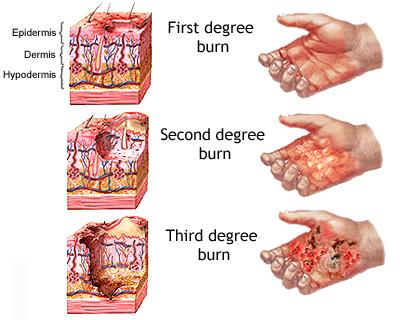
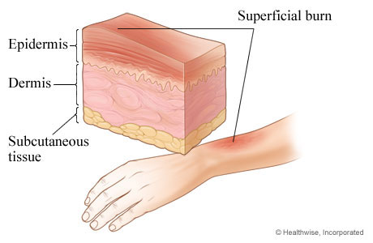
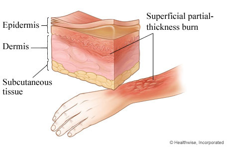
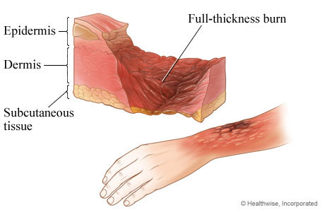

Some of the most common causes of burn injuries are scalding hot liquids, chemicals, electricity, fire, excessive sun exposure, and ice or freezers. The cause of the burn does not necessarily indicate the degree, for example getting burned by scalding liquids could cause all three degrees. Chemical and electrical burns need immediate medical attention no matter what the affected area looks like.
Burns
Burns are among the most common household injuries. A burn is an injury caused by exposure to heat or flame. To classify how severe the burn injury is, you need to look at the amount of damage that was done to the skin and surrounding area. After looking at the affected area, the burn then can be classified as a 1st degree burn, a 2nd degree burn, or a 3rd degree burn. The more severe the burned area is the higher the degree. 1st degree burns are classified as minor burns, whereas 3rd degree burns are classified as major burns. The classification of the burn does depend on how long the skin made contact with the heat source and how hot it was.

Figure: Types of Burns

A 1st degree burn causes minimal skin damage or a superficial burn because they affect the outermost layer of skin (epidermis). The signs are redness, minor inflammation or swelling, and some pain. The symptoms will disappear once the skin cells begin to shed, which can be seen when the skin becomes dry and begins to peel. A 1st degree burn tends to heal within 3 to 6 days. These burns usually can be treated at homes and do not need professional attention unless the burn area is greater than three inches or on the face or a major joint. In these cases you must see a physician.
There are three steps to treat a 1st degree burn. The first is to stop the burn. The second is to cool the burn by soaking the burned area in cool water for five minutes or longer. The third step is to cover the burn by simply covering the area with loose gauze or first applying some aloe cream with the gauze. Never ice the area or use cotton balls because it can make the burn worse of increase risk of infection. Also do not use home remedies like butter and eggs because they do not work.

Figure: 1st Degree Burn
A 2nd degree burn is more serious because the damage to the skin is deeper than the first layer (dermis). The signs are blisters on the skin, and the skin will be extremely red and sore. The area may seem wet if one of the blisters has popped. The healing time for a 2nd degree burn is about 2 to 3 weeks and sometimes it takes longer.
The treatment for 2nd degree burns are similar to 1st degree burns because it follows the same three steps. The first is to stop the burn. The second is to cool the burn by soaking the burned area in cool water for fifteen minutes or longer. The third step is to cover the burn by simply covering the area with loose gauze or first applying some aloe cream with the gauze. Never ice the area or use cotton balls because it can make the burn worse of increase risk of infection.
It is very important for a 2nd degree burn, to frequently change the bandaging because it prevents infection and helps heal the burned area quicker. You must seek emergency medical treatment if there are 2nd degree burns on your face, your hands, your buttocks, your groin, or your feet.

Figure: 2nd Degree Burn
A 3rd degree burn is the most dangerous type of burn a person can get. These type of burn can damage the blood vessels, major organs, bones and can lead to a person’s death. Though a 3rd degree burn is the worst type of burn it does not mean it is the most painful. Most of the time the wounded person does not feel pain because of nerve damage. These burns affect the deepest layer of the skin (hypodermis).
With this type of burn, the skin will appear to be waxy and white, charred dark brown, or raised and leathery.
You should never try to self treat a 3rd degree burns. Call 911 immediately.
3rd degree burns can lead to problems in deep skin tissue, bones and organs. Patients with 3rd degree burns may require surgery, physical therapy, rehabilitation and lifelong assisted care.
There is no a set healing time for a 3rd degree burn.

Figure: 3rd Degree Burn